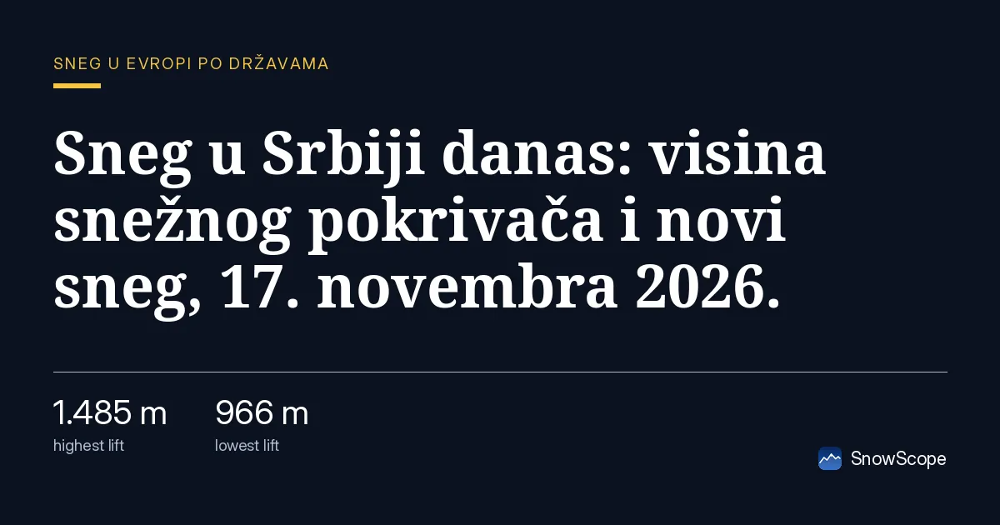

Sneg u Srbiji danas: visina snežnog pokrivača i novi sneg, 17. novembra 2026.
U Srbiji je danas pod snegom oko 30 km² (utorak, 17. novembra). Površina je gotovo ista kao jučer.
Pogledajte prognozu snega za Avantura park u aplikaciji SnowScopeVisina snega, upozorenja i 3D karta, besplatno.
Snežni pokrivač danas
Nijedan visinski pojas još nije pretežno bel. Za sedam dana površina se gotovo nije promenila u odnosu na 70 km².
| Ski-centar | Visina snega | Novi sneg, 72 h | Naredni dani | Vrh |
|---|---|---|---|---|
| Avantura park | 3 cm | 0 cm | 0 cm | 1.485 m |

Gde je pao novi sneg
Poslednja tri dana gotovo nije padao sneg: maksimum je 0 cm.
Najbolji ski-centri trenutno
Prednjači Avantura park: 3 cm na gornjem delu staza.
Ski-centri sa snegom na gornjim stazama: 1 od 9.
Šta to znači na stazama
Malo promena: uređene staze su pouzdane, a sneg izvan njih stari i stvrdnjava se.
Naredni dani
Nedelja može doneti do 8 cm, od toga do 0 cm u naredna tri dana.
Najsnežniji dan: ponedeljak, 23. novembra, do 6 cm.
Saveti za skijaše
- Iznad granice šume vetar može naneti sneg: oprezno na grebenima.
About these numbers
Resort snow depths are the deepest snow on the resort's upper slopes from the SnowScope snow model (about 1 km, run of 17. novembra); they are estimates for an area, not a measurement at one point. Station values are measurements on the date shown. Forecasts can change. Always read the official avalanche bulletin before going off-piste.
Cite this report
For research, teaching or the press: the numbers and charts are free to reuse under CC BY 4.0 with this citation.
SnowScope (2026), Sneg u Srbiji danas: visina snežnog pokrivača i novi sneg, 17. novembra 2026., https://snowscope.app/blog/sr/2026/11/serbia-snow-report-17-november-2026.html, accessed 2026-11-17
SnowScope (Atlas Labs). (2026, November 17). Sneg u Srbiji danas: visina snežnog pokrivača i novi sneg, 17. novembra 2026.. SnowScope snow reports. https://snowscope.app/blog/sr/2026/11/serbia-snow-report-17-november-2026.html
BibTeX
@misc{snowscope2026serbiasnowreport17novemb,
author = {{SnowScope (Atlas Labs)}},
title = {Sneg u Srbiji danas: visina snežnog pokrivača i novi sneg, 17. novembra 2026.},
year = {2026},
month = nov,
howpublished = {\url{https://snowscope.app/blog/sr/2026/11/serbia-snow-report-17-november-2026.html}},
note = {Published 2026-11-17 13:46 UTC; accessed 2026-11-17}
}· CC BY 4.0 · Methods, data and tools →
Avantura park: snow and temperature by height, this winter vs last (tools) →
Follow Avantura park
Besplatno: poruka kada dolazi novi sneg i prognoza svako jutro.